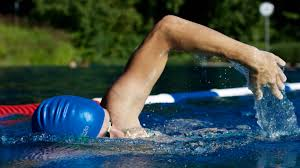

Introduction
In the setting of sports all effort is concentrated on the physical development of athletes to increase power and strength and mental health is usually looked over. The importance of teen athletes maintaining mental strength and resilience is more important than their physical development. Teen athletes face unique challenges other athletes and other teens don’t need to, which makes them a group more prone to mental health issues. By prioritizing mental health awareness, coping strategies, signs you need help and ways to prevent mental health issues to athletes, coaches and parents many mental health crises can be avoided.
Importance
It is of utmost importance to prioritize the development of mental strength in teenage athletes, as it greatly contributes to their overall well-being and success in sports. In addition to physical abilities, mental strength equips young athletes with the necessary resilience and concentration to overcome the challenges that come with both sports and life. By fostering mental resilience, athletes are able to bounce back from setbacks, handle pressure, and maintain confidence in the face of adversity. Furthermore, a strong mental game enhances decision-making abilities, concentration, and the capacity to perform under high-pressure circumstances. By nurturing the mental strength of teenage athletes, coaches and mentors empower them not only to excel in their chosen sport, but also to cultivate valuable life skills that will benefit them long after their time on the field.
The Plan
The plan to deal with mental strength and resilience is over a 3 week period as it is said to take 3 weeks to develop a habit and 13 weeks to make it a permanent part of your life. The plan takes multiple key elements shown to improve athletes mental health and compiles them into a program taking under an hour per day.
Active Plan:
- Week 1 Video: Positive Feedback
- Week 2 Video: Time Managment
- Week 3 Video: Coping Strategies
Passive Plan:
Important:
- Sleep 9:30 every night
- Wake 6:30 every morning
- Self reflection on positive activities after each day in daily journal
- Activities 15 mins per activity per day for first 2 weeks
- Start with goal setting (SMART)
- *Group activity (games, hike, etc.)
- End with goal reflection
Why This?

Mental health issues can present in multiple ways such as: depression, anxiety, burnout, eating disorders, stress and many others. Most of these issues are caused by each other which is why it is important to be well rounded mentally which this program works toward.
The goal setting towards the start gives the athletes something to work towards throughout the program whether that's making the sleep schedule (asleep by 9:30 awake by 6:30) or remembering to do the activities all the way to making it to school on time. The deep breathing exercises every day help calm down the body, reducing stress and anxiety. Every week is ended by a talk from an expert in mental health on an important topic related to athletics and mental health as well as a group activity with the other people. The second week mindfulness is added to further help deal with stress and anxiety which in turn can help make people feel much better. The second week talk is about time management which is a big problem for teenage athletes contributing to stress and anxiety which in turn cause other mental health problems. For the third week each activity is increased by 5 minutes per day to help build a stronger habit. The final talk is on healthy coping strategies for young athletes dealing with mental health problems and how they can find help. The program ended with a reward (group breakfast) to keep the motivation up during the program and to reward everyone for their good work. At the end the athletes completed a self reflection on how they performed compared to their goals and if they noticed any improvements over the 3 weeks.
The Results

Over the 3 weeks the athletes said the sleep schedule helped reduce fatigue and improved productivity which reduced the amount of homework as time was managed better which greatly reduced stress and anxiety which helped everyone stay more motivated on their athletics and reduced some burnout. It has been shown that having a consistent bedtime greatly decreases fatigue and increases productivity which is why there was a consistent bedtime even on weekends to build the habit. After the program 3 of out 5 athletes decided to stay on the sleep schedule and said they noticed a huge improvement.